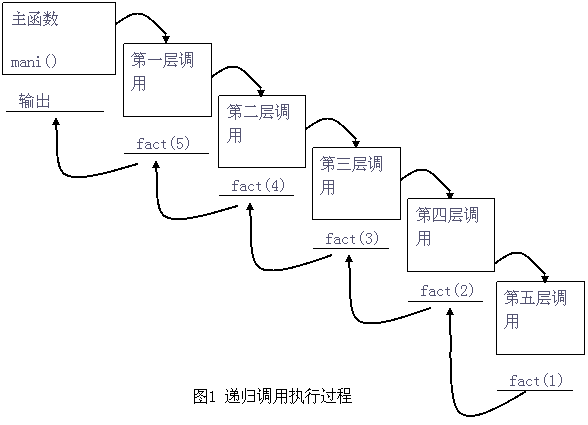

<pre>
<script language="javascript">
function fnR(p){ 	
	if(p>1){			
		fnR(--p);
		echo(p);
}}
fnR(3);
//以上代码执行流程描述如下：
/*第一次调用：p=3 
function fnR(p){ 	
	if(3>1){			
		fnR(2);
		echo(2);
}}
//第二次调用：p=2
function fnR(p){ 	
	if(2>1){			
		fnR(1);
		echo(1);
}}
//第三次调用：p=1
function fnR(p){ 	
	if(1>1){			
		fnR(1);
		echo(1);
}}
//说明：因为第三次不满足条件，第三次就相当于调用了一个空函数（if里面没执行，外面没有else就相当于空）。
//执行结束没有任何返回值，退回现场到第20行。然后执行第21行输出1，这样第二次调用的函数体执行就结束了。
//第二次同样没有返回值把现场教给第14行。然后执行第15行，输出：2. 第一次调用函数体也执行完毕。把最终控制权教给第9行
*/


//封装写函数
function echo(  str, flag ){
 	if(arguments[1]==1){
		document.write(arguments[0]);
	}
	else{
		document.writeln(arguments[0]);
	}
	
} 
</script>
</pre>
